Ab Wheel RolloutCore · Ab Wheel
Ab Wheel RolloutCore · Ab Wheel Air BikeFull body · Air Bike
Air BikeFull body · Air Bike Archer Pull UpsBack · Pull-Up Bar
Archer Pull UpsBack · Pull-Up Bar Archer Push UpsChest · Bodyweight
Archer Push UpsChest · Bodyweight Arnold PressShoulders · Dumbbell
Arnold PressShoulders · Dumbbell Assisted Pull UpsBack · Assisted Pull-Up Machine
Assisted Pull UpsBack · Assisted Pull-Up Machine Back ExtensionBack · Bodyweight
Back ExtensionBack · Bodyweight Back LeverFull body · Pull-Up Bar
Back LeverFull body · Pull-Up Bar Ball PikeCore · Stability Ball
Ball PikeCore · Stability Ball Band Assisted Pull UpsBack · Resistance Band
Band Assisted Pull UpsBack · Resistance Band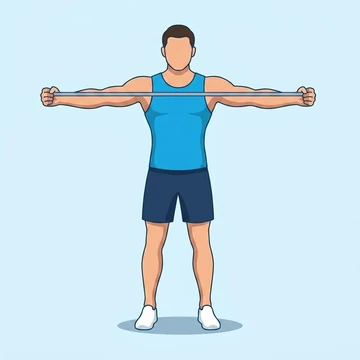
Band Pull ApartShoulders · Resistance Band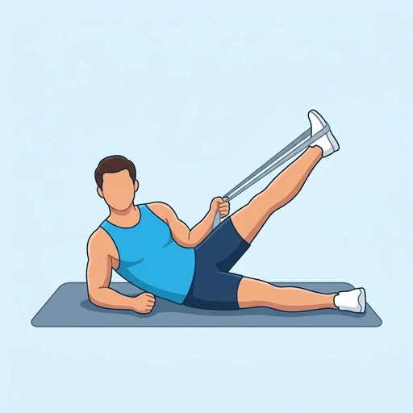
Banded Adductor StretchUpper legs · Resistance Band Banded Ankle StretchLower legs · Resistance Band
Banded Ankle StretchLower legs · Resistance Band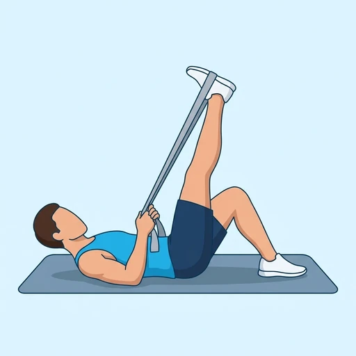
Banded Calf StretchLower legs · Resistance Band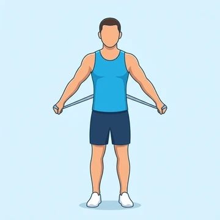
Banded Chest StretchChest · Resistance Band Banded ClamshellUpper legs · Loop Band
Banded ClamshellUpper legs · Loop Band Banded Figure-4 StretchUpper legs · Resistance Band
Banded Figure-4 StretchUpper legs · Resistance Band Banded Fire HydrantUpper legs · Loop Band
Banded Fire HydrantUpper legs · Loop Band Banded Glute BridgeUpper legs · Loop Band
Banded Glute BridgeUpper legs · Loop Band Banded Good MorningUpper legs · Loop Band
Banded Good MorningUpper legs · Loop Band Banded Hamstring StretchUpper legs · Resistance Band
Banded Hamstring StretchUpper legs · Resistance Band Banded Hip ThrustUpper legs · Loop Band
Banded Hip ThrustUpper legs · Loop Band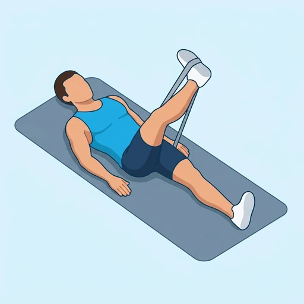
Banded IT-Band StretchUpper legs · Resistance Band Banded Kneeling Hip ThrustUpper legs · Loop Band
Banded Kneeling Hip ThrustUpper legs · Loop Band Banded Lat StretchBack · Resistance Band
Banded Lat StretchBack · Resistance Band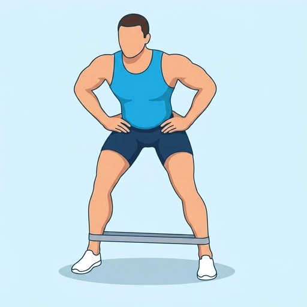
Banded Lateral WalkUpper legs · Loop Band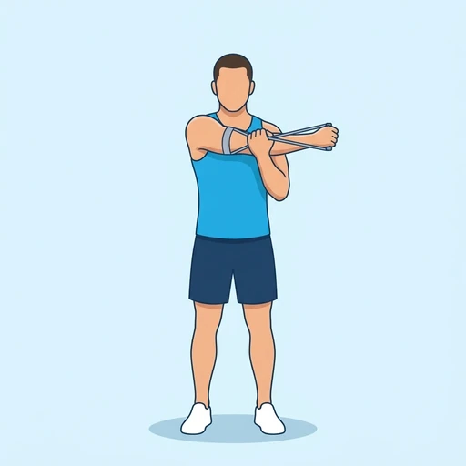
Banded Rear Delt StretchShoulders · Resistance Band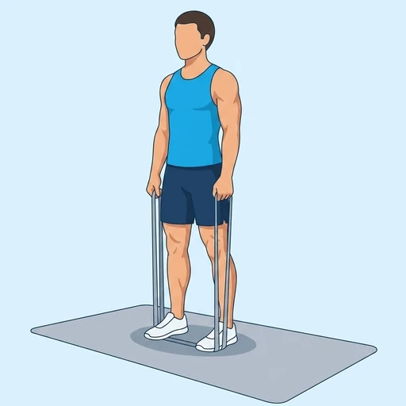
Banded Romanian DeadliftUpper legs · Loop Band Banded Seated Hip AbductionUpper legs · Loop Band
Banded Seated Hip AbductionUpper legs · Loop Band Banded Shoulder StretchShoulders · Resistance Band
Banded Shoulder StretchShoulders · Resistance Band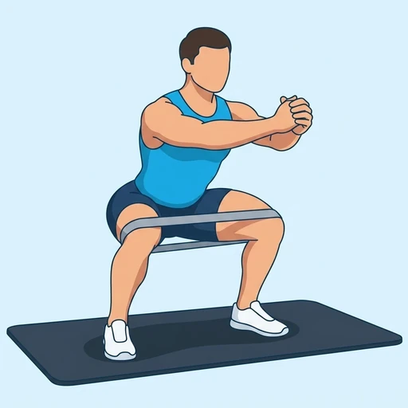
Banded SquatUpper legs · Loop Band Banded Standing Hip AbductionUpper legs · Loop Band
Banded Standing Hip AbductionUpper legs · Loop Band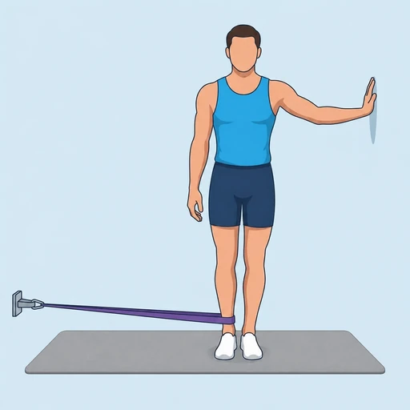
Banded Standing Hip AdductionUpper legs · Loop Band Banded Standing Leg CurlUpper legs · Loop Band
Banded Standing Leg CurlUpper legs · Loop Band Banded Sumo WalkUpper legs · Loop Band
Banded Sumo WalkUpper legs · Loop Band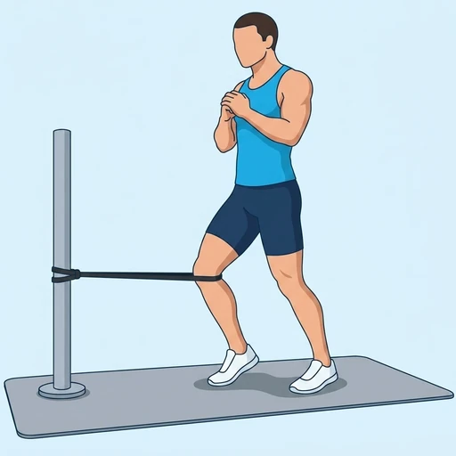
Banded Terminal Knee ExtensionUpper legs · Loop Band Banded Triceps StretchUpper arms · Resistance Band
Banded Triceps StretchUpper arms · Resistance Band Barbell Ab RolloutCore · Barbell
Barbell Ab RolloutCore · Barbell Barbell Back SquatUpper legs · Barbell
Barbell Back SquatUpper legs · Barbell Barbell Bench PressChest · Barbell
Barbell Bench PressChest · Barbell Barbell Calf RaiseLower legs · Barbell
Barbell Calf RaiseLower legs · Barbell Barbell CurlUpper arms · Barbell
Barbell CurlUpper arms · Barbell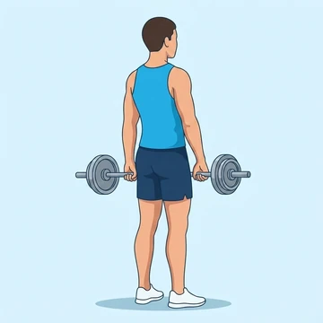
Barbell DeadliftBack · Barbell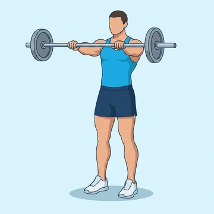
Barbell Front RaiseShoulders · Barbell Barbell Glute BridgeUpper legs · Barbell
Barbell Glute BridgeUpper legs · Barbell Barbell Hip ThrustUpper legs · Barbell
Barbell Hip ThrustUpper legs · Barbell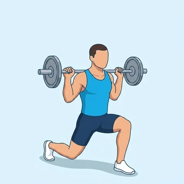
Barbell LungeUpper legs · Barbell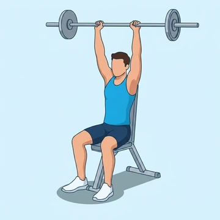
Barbell Overhead ExtensionUpper arms · Barbell Barbell Overhead PressShoulders · Barbell
Barbell Overhead PressShoulders · Barbell Barbell Preacher CurlUpper arms · Barbell
Barbell Preacher CurlUpper arms · Barbell Barbell PulloverBack · Barbell
Barbell PulloverBack · Barbell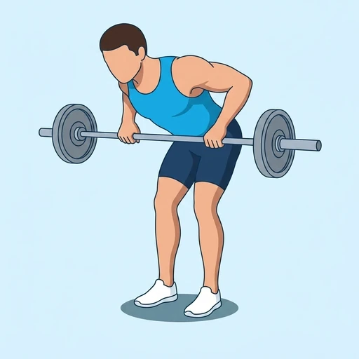
Barbell Rear Delt RowShoulders · BarbellBarbell Reverse LungeUpper legs · Barbell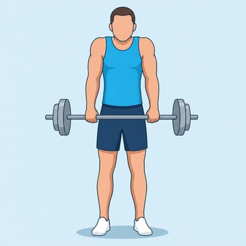
Barbell ShrugShoulders · Barbell Barbell Upright RowShoulders · Barbell
Barbell Upright RowShoulders · Barbell Barbell Wrist CurlLower arms · Barbell
Barbell Wrist CurlLower arms · Barbell Battle Rope Double SlamFull body · Battle Rope
Battle Rope Double SlamFull body · Battle Rope Battle RopesFull body · Battle Rope
Battle RopesFull body · Battle Rope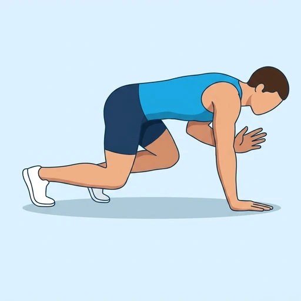
Bear CrawlFull body · Bodyweight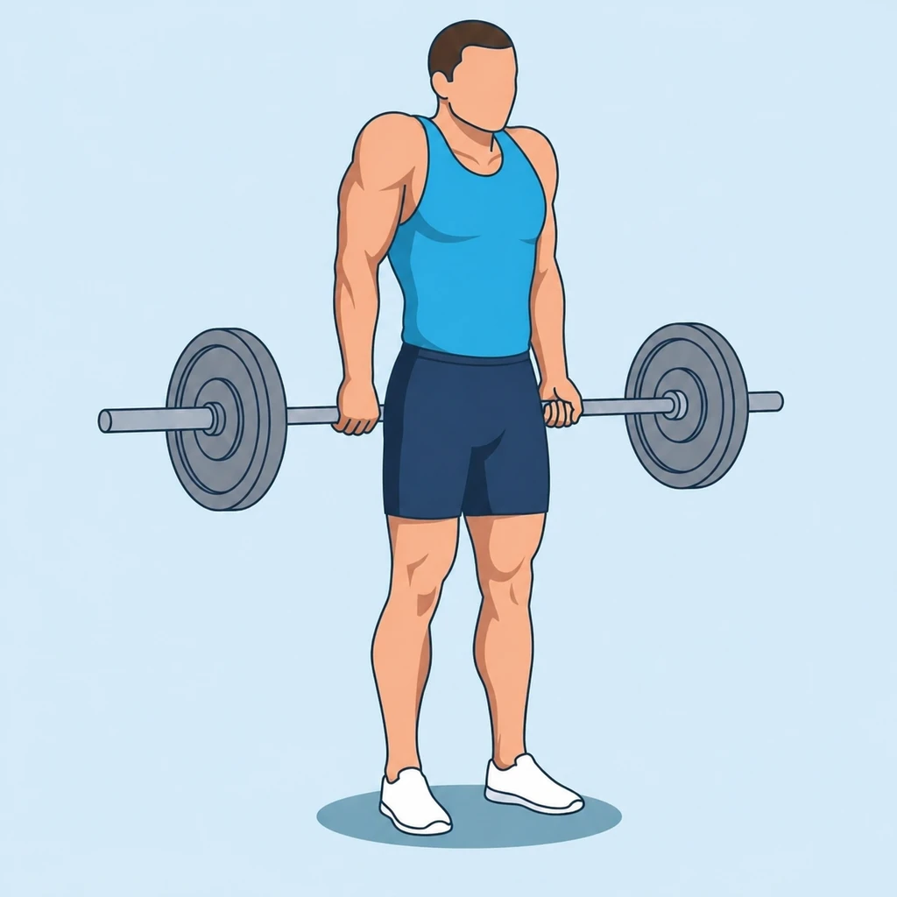
Behind the Back Barbell ShrugBack · Barbell Behind the Neck PressShoulders · Barbell
Behind the Neck PressShoulders · Barbell Behind-the-Neck Lat PulldownBack · Lat Pulldown Machine
Behind-the-Neck Lat PulldownBack · Lat Pulldown Machine Behind-the-Neck Pull-UpBack · Pull-Up Bar
Behind-the-Neck Pull-UpBack · Pull-Up Bar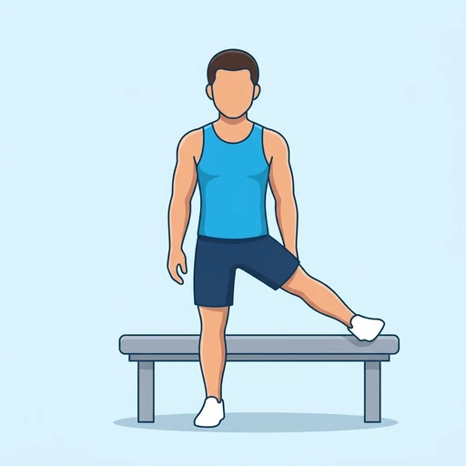
Bench Adductor StretchUpper legs · Flat Bench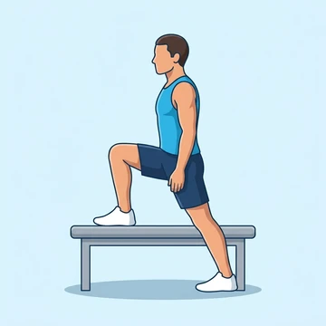
Bench Ankle StretchLower legs · Flat Bench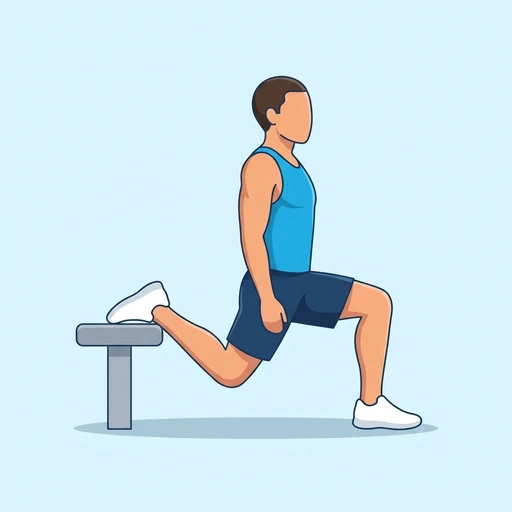
Bench Bulgarian Split StretchUpper legs · Flat Bench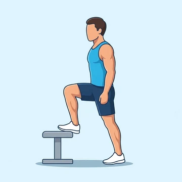
Bench Calf StretchLower legs · Flat Bench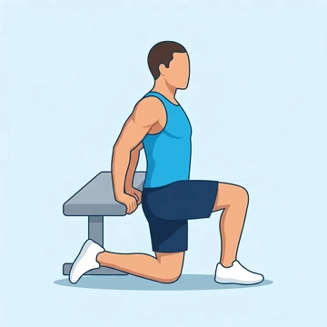
Bench Chest StretchChest · Flat Bench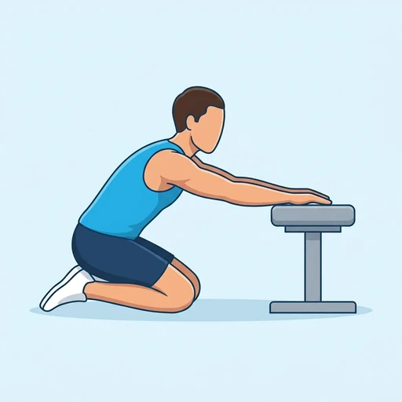
Bench Child's PoseBack · Flat Bench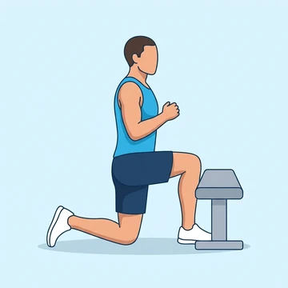
Bench Couch StretchUpper legs · Flat Bench Bench DipsUpper arms · Bodyweight
Bench DipsUpper arms · Bodyweight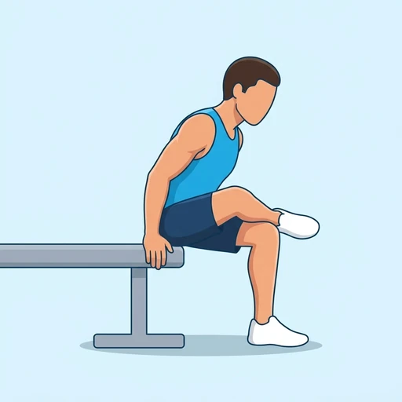
Bench Figure-4 Glute StretchUpper legs · Flat Bench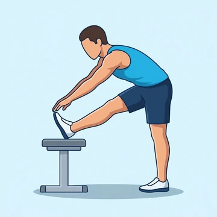
Bench Hamstring StretchUpper legs · Flat Bench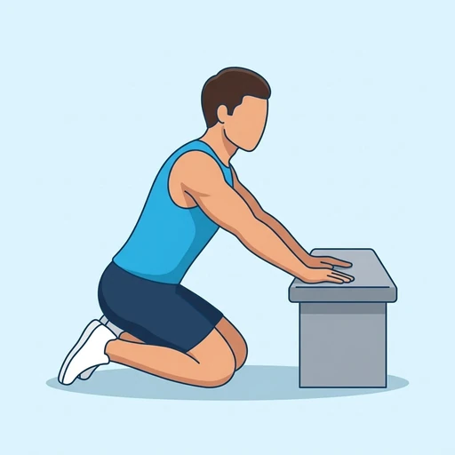
Bench Lat StretchBack · Flat Bench Bench Leg Pull-InCore · Bodyweight
Bench Leg Pull-InCore · Bodyweight Bench PullBack · Barbell
Bench PullBack · Barbell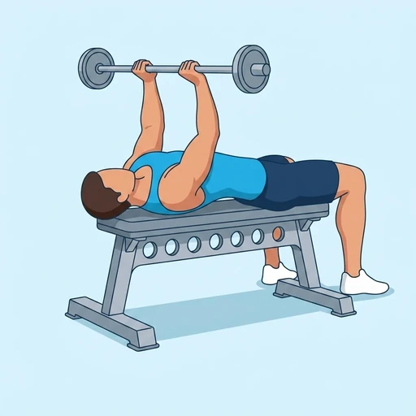
Bent Arm Barbell PulloverBack · Barbell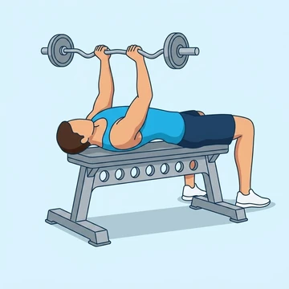
Bent-Arm EZ-Bar PulloverBack · EZ Curl Bar Bent-Over Barbell RowBack · Barbell
Bent-Over Barbell RowBack · Barbell Bent-Over Dumbbell RowBack · Dumbbell
Bent-Over Dumbbell RowBack · Dumbbell Bent-Over EZ-Bar RowBack · EZ Curl Bar
Bent-Over EZ-Bar RowBack · EZ Curl Bar Bicycle CrunchCore · Bodyweight
Bicycle CrunchCore · Bodyweight Bilateral Dumbbell Wrist CurlLower arms · Dumbbell
Bilateral Dumbbell Wrist CurlLower arms · Dumbbell Bird Dog HoldCore · Bodyweight
Bird Dog HoldCore · Bodyweight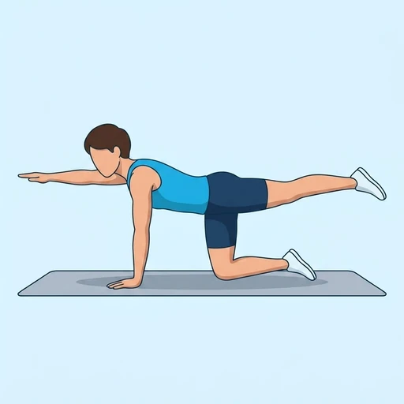
Bird-DogCore · Bodyweight Boat PoseCore · Bodyweight
Boat PoseCore · Bodyweight Bodyweight Calf RaiseLower legs · Bodyweight
Bodyweight Calf RaiseLower legs · Bodyweight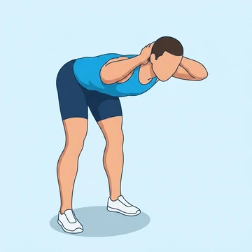
Bodyweight Good MorningBack · Bodyweight Bodyweight Lateral RaiseShoulders · Bodyweight
Bodyweight Lateral RaiseShoulders · Bodyweight Bodyweight Overhead PressShoulders · Bodyweight
Bodyweight Overhead PressShoulders · Bodyweight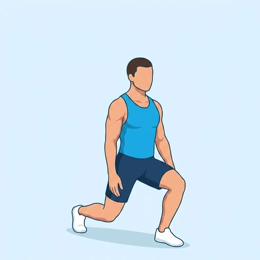
Bodyweight Reverse LungeUpper legs · Bodyweight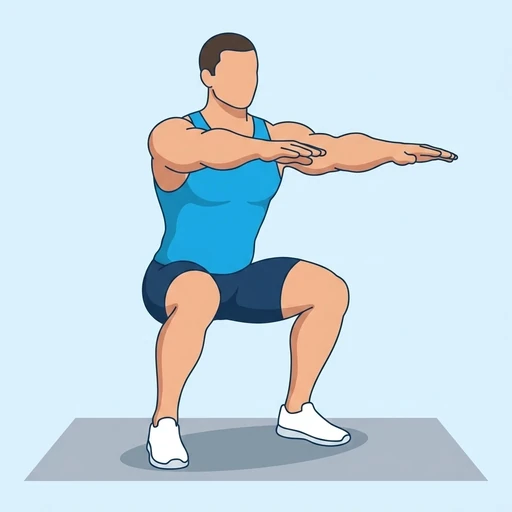
Bodyweight SquatUpper legs · Bodyweight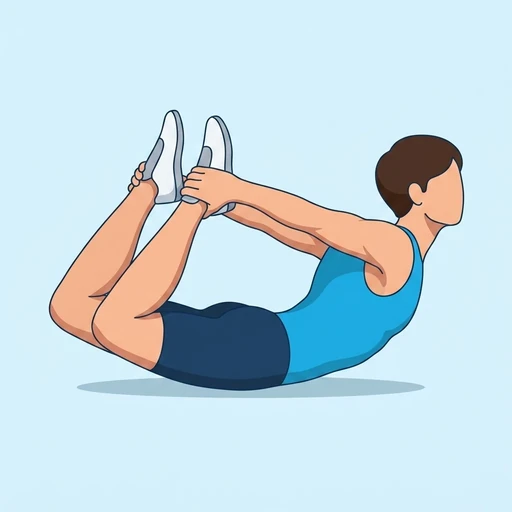
Bow PoseBack · Bodyweight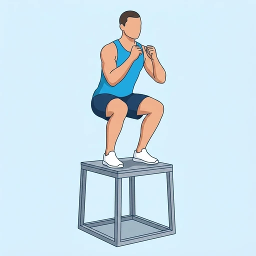
Box JumpUpper legs · Plyo Box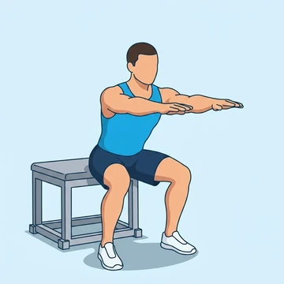
Box SquatUpper legs · Bodyweight Bulgarian Split SquatUpper legs · Dumbbell
Bulgarian Split SquatUpper legs · Dumbbell BurpeesFull body · Bodyweight
BurpeesFull body · Bodyweight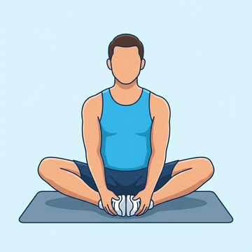
Butterfly StretchUpper legs · Bodyweight Cable Bent-Over RowBack · Cable Machine
Cable Bent-Over RowBack · Cable Machine Cable Chest PressChest · Cable Machine
Cable Chest PressChest · Cable Machine Cable CrunchCore · Cable Machine
Cable CrunchCore · Cable Machine Cable CurlUpper arms · Cable Machine
Cable CurlUpper arms · Cable Machine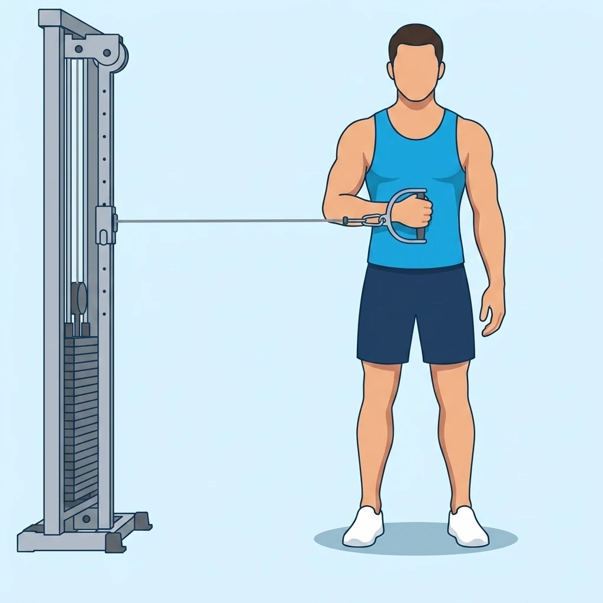
Cable External RotationShoulders · Cable Machine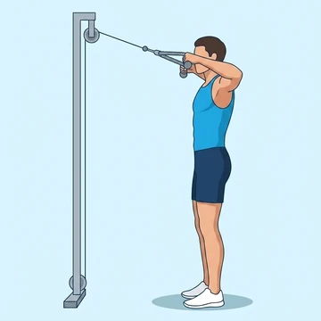
Cable Face PullShoulders · Cable Machine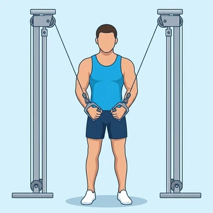
Cable FlyChest · Cable Machine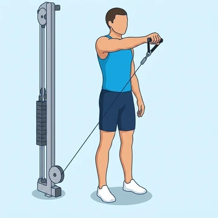
Cable Front RaiseShoulders · Cable Machine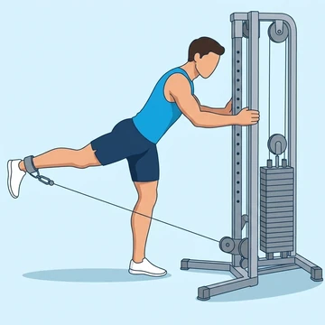
Cable Glute KickbackUpper legs · Cable Machine Cable Hammer CurlUpper arms · Cable Machine
Cable Hammer CurlUpper arms · Cable Machine Cable Lateral RaiseShoulders · Cable Machine
Cable Lateral RaiseShoulders · Cable Machine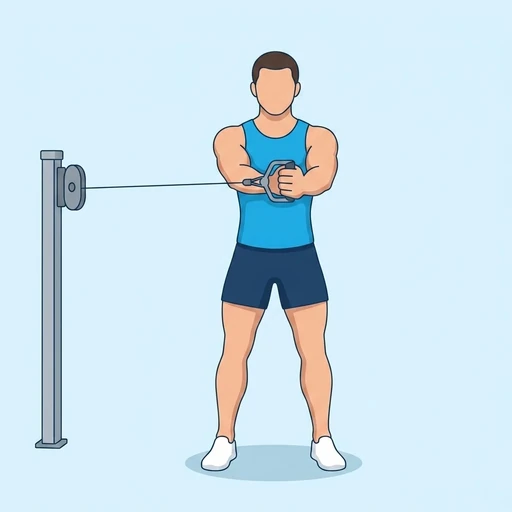
Cable Pallof PressCore · Cable Machine Cable Tricep KickbackUpper arms · Cable Machine
Cable Tricep KickbackUpper arms · Cable Machine Cable Tricep PushdownUpper arms · Cable Machine
Cable Tricep PushdownUpper arms · Cable Machine Cable Upright RowShoulders · Cable Machine
Cable Upright RowShoulders · Cable Machine Cable Wrist CurlLower arms · Cable Machine
Cable Wrist CurlLower arms · Cable Machine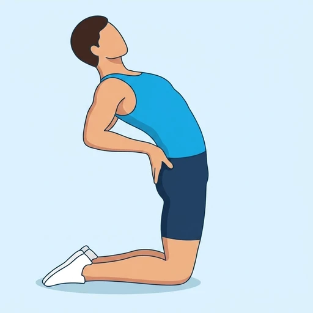
Camel PoseCore · Bodyweight Captain's Chair Knee RaiseCore · Bodyweight
Captain's Chair Knee RaiseCore · Bodyweight Captain's Chair Leg RaiseCore · Bodyweight
Captain's Chair Leg RaiseCore · Bodyweight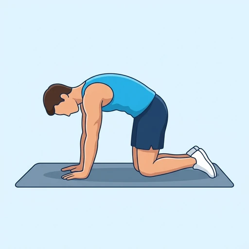
Cat StretchBack · Bodyweight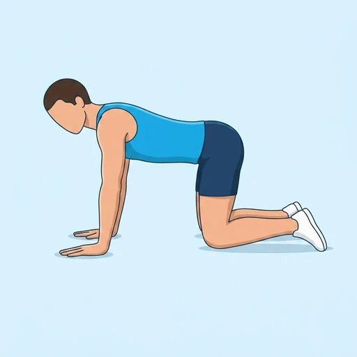
Cat-CowBack · Bodyweight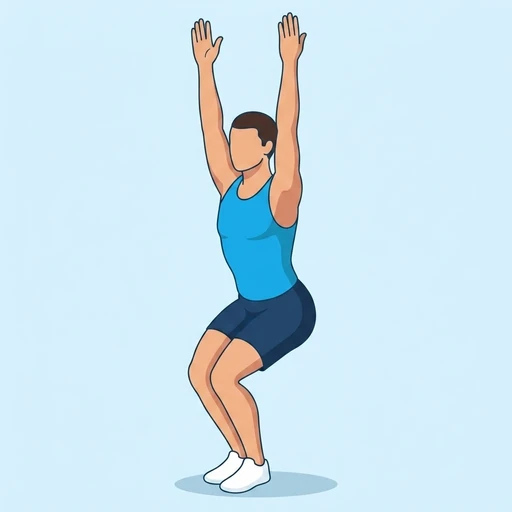
Chair PoseUpper legs · Bodyweight Cheat CurlUpper arms · Barbell
Cheat CurlUpper arms · Barbell Chest DipsChest · Dip Station
Chest DipsChest · Dip Station Chest Supported Dumbbell ShrugBack · Dumbbell
Chest Supported Dumbbell ShrugBack · Dumbbell Chest-Supported Dumbbell RowBack · Dumbbell
Chest-Supported Dumbbell RowBack · Dumbbell Chest-Supported Kettlebell RowBack · Kettlebell
Chest-Supported Kettlebell RowBack · Kettlebell Chest-Supported Smith Machine RowBack · Smith Machine
Chest-Supported Smith Machine RowBack · Smith Machine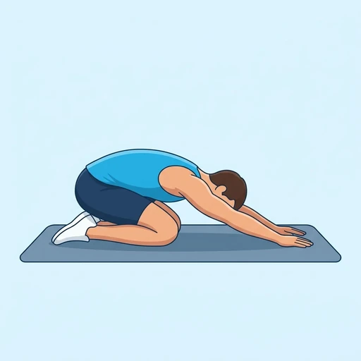
Child's PoseBack · Bodyweight Chin Tuck HoldFull body · Bodyweight
Chin Tuck HoldFull body · Bodyweight Chin-UpsBack · Pull-Up Bar
Chin-UpsBack · Pull-Up Bar Clamshell HoldUpper legs · Bodyweight
Clamshell HoldUpper legs · Bodyweight ClamshellsUpper legs · Bodyweight
ClamshellsUpper legs · Bodyweight Clap Push-UpsChest · Bodyweight
Clap Push-UpsChest · Bodyweight CleanFull body · Barbell
CleanFull body · Barbell Clean and JerkFull body · BarbellClose Grip Lat PulldownBack · Cable Machine
Clean and JerkFull body · BarbellClose Grip Lat PulldownBack · Cable Machine Close Grip Push UpsChest · BodyweightClose-Grip Barbell CurlUpper arms · Barbell
Close Grip Push UpsChest · BodyweightClose-Grip Barbell CurlUpper arms · Barbell Close-Grip Bench PressUpper arms · Barbell
Close-Grip Bench PressUpper arms · Barbell Close-Grip Dumbbell Bench PressUpper arms · Dumbbell
Close-Grip Dumbbell Bench PressUpper arms · Dumbbell Close-Grip EZ-Bar Bench PressUpper arms · EZ Curl Bar
Close-Grip EZ-Bar Bench PressUpper arms · EZ Curl Bar Close-Grip EZ-Bar CurlUpper arms · EZ Curl Bar
Close-Grip EZ-Bar CurlUpper arms · EZ Curl Bar Close-Grip Incline Bench PressUpper arms · BarbellClose-Grip Pull-UpsBack · Pull-Up BarClose-Stance Leg PressUpper legs · Leg PressCobra StretchCore · BodyweightCocoonsCore · Bodyweight
Close-Grip Incline Bench PressUpper arms · BarbellClose-Grip Pull-UpsBack · Pull-Up BarClose-Stance Leg PressUpper legs · Leg PressCobra StretchCore · BodyweightCocoonsCore · Bodyweight Concentration CurlUpper arms · Dumbbell
Concentration CurlUpper arms · Dumbbell Corpse PoseFull body · BodyweightCossack SquatUpper legs · BodyweightCow Face PoseShoulders · BodyweightCrab DipsUpper arms · BodyweightCrescent LungeUpper legs · BodyweightCross Body Hammer CurlUpper arms · DumbbellCross-Body CrunchCore · BodyweightCross-Body Shoulder StretchShoulders · BodyweightCrow PoseUpper arms · BodyweightCrunchesCore · BodyweightDancer PoseUpper legs · Bodyweight
Corpse PoseFull body · BodyweightCossack SquatUpper legs · BodyweightCow Face PoseShoulders · BodyweightCrab DipsUpper arms · BodyweightCrescent LungeUpper legs · BodyweightCross Body Hammer CurlUpper arms · DumbbellCross-Body CrunchCore · BodyweightCross-Body Shoulder StretchShoulders · BodyweightCrow PoseUpper arms · BodyweightCrunchesCore · BodyweightDancer PoseUpper legs · Bodyweight Dead BugCore · BodyweightDead Bug HoldCore · BodyweightDead HangBack · Pull-Up Bar
Dead BugCore · BodyweightDead Bug HoldCore · BodyweightDead HangBack · Pull-Up Bar Decline Barbell Bench PressChest · Barbell
Decline Barbell Bench PressChest · Barbell Decline Bench PressChest · DumbbellDecline CrunchCore · BodyweightDecline Dumbbell FlyChest · DumbbellDecline EZ-Bar Bench PressChest · EZ Curl Bar
Decline Bench PressChest · DumbbellDecline CrunchCore · BodyweightDecline Dumbbell FlyChest · DumbbellDecline EZ-Bar Bench PressChest · EZ Curl Bar Decline Push-UpChest · BodyweightDeficit DeadliftBack · Barbell
Decline Push-UpChest · BodyweightDeficit DeadliftBack · Barbell Deficit Push UpsChest · Bodyweight
Deficit Push UpsChest · Bodyweight Diamond Push UpsChest · BodyweightDolphin PoseShoulders · Bodyweight
Diamond Push UpsChest · BodyweightDolphin PoseShoulders · Bodyweight Donkey Calf RaiseLower legs · BodyweightDoorway Chest StretchChest · BodyweightDouble Dumbbell Kickstand DeadliftBack · Dumbbell
Donkey Calf RaiseLower legs · BodyweightDoorway Chest StretchChest · BodyweightDouble Dumbbell Kickstand DeadliftBack · Dumbbell Double Dumbbell Overhead CarryShoulders · DumbbellDouble Kettlebell Bicep CurlUpper arms · KettlebellDouble Kettlebell CleanShoulders · Kettlebell
Double Dumbbell Overhead CarryShoulders · DumbbellDouble Kettlebell Bicep CurlUpper arms · KettlebellDouble Kettlebell CleanShoulders · Kettlebell Double Kettlebell Clean and PressShoulders · Kettlebell
Double Kettlebell Clean and PressShoulders · Kettlebell Double Kettlebell Dead CleanFull body · Kettlebell
Double Kettlebell Dead CleanFull body · Kettlebell Double Kettlebell Dead Split SnatchFull body · KettlebellDouble Kettlebell JerkShoulders · KettlebellDouble Kettlebell Overhead CarryShoulders · Kettlebell
Double Kettlebell Dead Split SnatchFull body · KettlebellDouble Kettlebell JerkShoulders · KettlebellDouble Kettlebell Overhead CarryShoulders · Kettlebell Double Kettlebell Overhead PressShoulders · Kettlebell
Double Kettlebell Overhead PressShoulders · Kettlebell Double Kettlebell Push PressShoulders · KettlebellDouble Kettlebell Rear Delt RowShoulders · KettlebellDouble Kettlebell RowBack · Kettlebell
Double Kettlebell Push PressShoulders · KettlebellDouble Kettlebell Rear Delt RowShoulders · KettlebellDouble Kettlebell RowBack · Kettlebell Double Kettlebell Split JerkFull body · Kettlebell
Double Kettlebell Split JerkFull body · Kettlebell Double Kettlebell Swing SnatchFull body · KettlebellDownward Dog Knee TuckCore · BodyweightDownward Dog PedalLower legs · BodyweightDownward Dog to Knee DriveCore · BodyweightDownward Dog to Low LungeUpper legs · BodyweightDownward Dog to PlankShoulders · BodyweightDownward Dog to Upward DogShoulders · BodyweightDownward-Facing DogFull body · BodyweightDrag CurlUpper arms · BarbellDragon FlagCore · BodyweightDumbbell Bench PressChest · DumbbellDumbbell Bench PullBack · DumbbellDumbbell Bicep CurlUpper arms · Dumbbell
Double Kettlebell Swing SnatchFull body · KettlebellDownward Dog Knee TuckCore · BodyweightDownward Dog PedalLower legs · BodyweightDownward Dog to Knee DriveCore · BodyweightDownward Dog to Low LungeUpper legs · BodyweightDownward Dog to PlankShoulders · BodyweightDownward Dog to Upward DogShoulders · BodyweightDownward-Facing DogFull body · BodyweightDrag CurlUpper arms · BarbellDragon FlagCore · BodyweightDumbbell Bench PressChest · DumbbellDumbbell Bench PullBack · DumbbellDumbbell Bicep CurlUpper arms · Dumbbell Dumbbell Calf RaiseLower legs · DumbbellDumbbell DeadliftBack · DumbbellDumbbell Face PullBack · DumbbellDumbbell Farmer's WalkFull body · DumbbellDumbbell Floor PressChest · DumbbellDumbbell FlyChest · DumbbellDumbbell Front RaiseShoulders · DumbbellDumbbell Front SquatUpper legs · Dumbbell
Dumbbell Calf RaiseLower legs · DumbbellDumbbell DeadliftBack · DumbbellDumbbell Face PullBack · DumbbellDumbbell Farmer's WalkFull body · DumbbellDumbbell Floor PressChest · DumbbellDumbbell FlyChest · DumbbellDumbbell Front RaiseShoulders · DumbbellDumbbell Front SquatUpper legs · Dumbbell Dumbbell Hammer CurlUpper arms · Dumbbell
Dumbbell Hammer CurlUpper arms · Dumbbell Dumbbell Hip ThrustUpper legs · DumbbellDumbbell Kickstand DeadliftBack · DumbbellDumbbell Lateral RaiseShoulders · DumbbellDumbbell LungeUpper legs · DumbbellDumbbell Overhead CarryShoulders · DumbbellDumbbell Pistol SquatUpper legs · DumbbellDumbbell PulloverChest · DumbbellDumbbell Push PressShoulders · DumbbellDumbbell Reverse CurlUpper arms · DumbbellDumbbell Reverse FlyShoulders · DumbbellDumbbell Reverse Wrist CurlLower arms · DumbbellDumbbell Romanian DeadliftBack · Dumbbell
Dumbbell Hip ThrustUpper legs · DumbbellDumbbell Kickstand DeadliftBack · DumbbellDumbbell Lateral RaiseShoulders · DumbbellDumbbell LungeUpper legs · DumbbellDumbbell Overhead CarryShoulders · DumbbellDumbbell Pistol SquatUpper legs · DumbbellDumbbell PulloverChest · DumbbellDumbbell Push PressShoulders · DumbbellDumbbell Reverse CurlUpper arms · DumbbellDumbbell Reverse FlyShoulders · DumbbellDumbbell Reverse Wrist CurlLower arms · DumbbellDumbbell Romanian DeadliftBack · Dumbbell Dumbbell Shoulder PressShoulders · DumbbellDumbbell ShrugShoulders · Dumbbell
Dumbbell Shoulder PressShoulders · DumbbellDumbbell ShrugShoulders · Dumbbell Dumbbell Side BendCore · DumbbellDumbbell Skull CrusherUpper arms · DumbbellDumbbell SnatchFull body · DumbbellDumbbell Somersault SquatUpper legs · DumbbellDumbbell Split SquatUpper legs · DumbbellDumbbell SquatUpper legs · DumbbellDumbbell Sumo SquatUpper legs · DumbbellDumbbell Svend PressChest · Dumbbell
Dumbbell Side BendCore · DumbbellDumbbell Skull CrusherUpper arms · DumbbellDumbbell SnatchFull body · DumbbellDumbbell Somersault SquatUpper legs · DumbbellDumbbell Split SquatUpper legs · DumbbellDumbbell SquatUpper legs · DumbbellDumbbell Sumo SquatUpper legs · DumbbellDumbbell Svend PressChest · Dumbbell Dumbbell Tricep ExtensionUpper arms · DumbbellDumbbell Tricep KickbackUpper arms · DumbbellDumbbell Upright RowShoulders · Dumbbell
Dumbbell Tricep ExtensionUpper arms · DumbbellDumbbell Tricep KickbackUpper arms · DumbbellDumbbell Upright RowShoulders · Dumbbell Dumbbell WindmillFull body · Dumbbell
Dumbbell WindmillFull body · Dumbbell Dumbbell Wrist CurlLower arms · DumbbellEZ Bar PulloverBack · EZ Curl BarEZ Bar Reverse Grip RowBack · EZ Curl BarEZ Bar Spider CurlUpper arms · EZ Curl BarEZ-Bar Bench PressChest · EZ Curl BarEZ-Bar CurlUpper arms · EZ Curl BarEZ-Bar Front RaiseShoulders · EZ Curl BarEZ-Bar Lying Triceps ExtensionUpper arms · EZ Curl BarEZ-Bar Overhead Tricep ExtensionUpper arms · EZ Curl BarEZ-Bar Reverse CurlUpper arms · EZ Curl BarEZ-Bar Romanian DeadliftUpper legs · EZ Curl BarEZ-Bar ShrugShoulders · EZ Curl BarEZ-Bar Upright RowShoulders · EZ Curl Bar
Dumbbell Wrist CurlLower arms · DumbbellEZ Bar PulloverBack · EZ Curl BarEZ Bar Reverse Grip RowBack · EZ Curl BarEZ Bar Spider CurlUpper arms · EZ Curl BarEZ-Bar Bench PressChest · EZ Curl BarEZ-Bar CurlUpper arms · EZ Curl BarEZ-Bar Front RaiseShoulders · EZ Curl BarEZ-Bar Lying Triceps ExtensionUpper arms · EZ Curl BarEZ-Bar Overhead Tricep ExtensionUpper arms · EZ Curl BarEZ-Bar Reverse CurlUpper arms · EZ Curl BarEZ-Bar Romanian DeadliftUpper legs · EZ Curl BarEZ-Bar ShrugShoulders · EZ Curl BarEZ-Bar Upright RowShoulders · EZ Curl Bar EZ-Bar Wrist CurlLower arms · EZ Curl BarEagle PoseUpper legs · BodyweightEasy PoseUpper legs · BodyweightElliptical TrainerFull body · EllipticalExtended Side Angle PoseUpper legs · BodyweightFish PoseChest · Bodyweight
EZ-Bar Wrist CurlLower arms · EZ Curl BarEagle PoseUpper legs · BodyweightEasy PoseUpper legs · BodyweightElliptical TrainerFull body · EllipticalExtended Side Angle PoseUpper legs · BodyweightFish PoseChest · Bodyweight Floor EZ-Bar PressChest · EZ Curl BarFloor Kettlebell PulloverBack · KettlebellFloor PressChest · BarbellFlutter KicksCore · BodyweightFront LeverBack · Pull-Up BarFront SquatUpper legs · BarbellGarland PoseUpper legs · Bodyweight
Floor EZ-Bar PressChest · EZ Curl BarFloor Kettlebell PulloverBack · KettlebellFloor PressChest · BarbellFlutter KicksCore · BodyweightFront LeverBack · Pull-Up BarFront SquatUpper legs · BarbellGarland PoseUpper legs · Bodyweight Glute BridgeUpper legs · Bodyweight
Glute BridgeUpper legs · Bodyweight Glute Bridge HoldUpper legs · BodyweightGlute KickbackUpper legs · BodyweightGlute Kickback HoldUpper legs · BodyweightGoblet SquatUpper legs · KettlebellGood MorningUpper legs · BarbellHack SquatUpper legs · Hack Squat Machine
Glute Bridge HoldUpper legs · BodyweightGlute KickbackUpper legs · BodyweightGlute Kickback HoldUpper legs · BodyweightGoblet SquatUpper legs · KettlebellGood MorningUpper legs · BarbellHack SquatUpper legs · Hack Squat Machine Hack Squat Calf RaiseLower legs · Hack Squat MachineHalf Moon PoseCore · BodyweightHalf-Kneeling Hip Flexor RockUpper legs · Bodyweight
Hack Squat Calf RaiseLower legs · Hack Squat MachineHalf Moon PoseCore · BodyweightHalf-Kneeling Hip Flexor RockUpper legs · Bodyweight Handstand Push UpsShoulders · Bodyweight
Handstand Push UpsShoulders · Bodyweight Hang CleanFull body · Barbell
Hang CleanFull body · Barbell Hang Power CleanFull body · BarbellHanging Knee RaiseCore · Pull-Up BarHanging Leg RaiseCore · Pull-Up BarHanging PikeCore · Pull-Up BarHappy Baby PoseUpper legs · BodyweightHead-to-Knee PoseUpper legs · BodyweightHeel-Elevated SquatUpper legs · BarbellHeel-to-Toe WalkLower legs · BodyweightHero PoseUpper legs · BodyweightHex Bar DeadliftBack · Trap BarHigh KneesFull body · Bodyweight
Hang Power CleanFull body · BarbellHanging Knee RaiseCore · Pull-Up BarHanging Leg RaiseCore · Pull-Up BarHanging PikeCore · Pull-Up BarHappy Baby PoseUpper legs · BodyweightHead-to-Knee PoseUpper legs · BodyweightHeel-Elevated SquatUpper legs · BarbellHeel-to-Toe WalkLower legs · BodyweightHero PoseUpper legs · BodyweightHex Bar DeadliftBack · Trap BarHigh KneesFull body · Bodyweight High PlankCore · BodyweightHigh-Foot Leg PressUpper legs · Leg PressHip AdductionUpper legs · Hip Adduction MachineHollow Body HoldCore · BodyweightHorizontal Leg PressUpper legs · Leg PressHuman FlagCore · Pull-Up BarIncline Barbell Bench PressChest · BarbellIncline Dumbbell CurlUpper arms · DumbbellIncline Dumbbell FlyChest · DumbbellIncline Dumbbell PressChest · DumbbellIncline EZ-Bar Bench PressChest · EZ Curl BarIncline Hammer CurlUpper arms · Dumbbell
High PlankCore · BodyweightHigh-Foot Leg PressUpper legs · Leg PressHip AdductionUpper legs · Hip Adduction MachineHollow Body HoldCore · BodyweightHorizontal Leg PressUpper legs · Leg PressHuman FlagCore · Pull-Up BarIncline Barbell Bench PressChest · BarbellIncline Dumbbell CurlUpper arms · DumbbellIncline Dumbbell FlyChest · DumbbellIncline Dumbbell PressChest · DumbbellIncline EZ-Bar Bench PressChest · EZ Curl BarIncline Hammer CurlUpper arms · Dumbbell Incline Push-UpChest · BodyweightIncline Treadmill WalkFull body · TreadmillInverted RowBack · BarbellIsometric Neck Lateral FlexionShoulders · BodyweightJackknife Sit-UpCore · BodyweightJefferson CurlBack · DumbbellJump RopeFull body · Jump RopeJump SquatUpper legs · Bodyweight
Incline Push-UpChest · BodyweightIncline Treadmill WalkFull body · TreadmillInverted RowBack · BarbellIsometric Neck Lateral FlexionShoulders · BodyweightJackknife Sit-UpCore · BodyweightJefferson CurlBack · DumbbellJump RopeFull body · Jump RopeJump SquatUpper legs · Bodyweight Jumping JacksFull body · BodyweightKettlebell Bulgarian Split SquatUpper legs · KettlebellKettlebell Close-Grip Floor PressUpper arms · KettlebellKettlebell Concentration CurlUpper arms · KettlebellKettlebell DeadliftBack · Kettlebell
Jumping JacksFull body · BodyweightKettlebell Bulgarian Split SquatUpper legs · KettlebellKettlebell Close-Grip Floor PressUpper arms · KettlebellKettlebell Concentration CurlUpper arms · KettlebellKettlebell DeadliftBack · Kettlebell Kettlebell Farmer's WalkFull body · KettlebellKettlebell Floor PressChest · KettlebellKettlebell Goblet LungeUpper legs · KettlebellKettlebell HaloShoulders · KettlebellKettlebell Hammer CurlUpper arms · Kettlebell
Kettlebell Farmer's WalkFull body · KettlebellKettlebell Floor PressChest · KettlebellKettlebell Goblet LungeUpper legs · KettlebellKettlebell HaloShoulders · KettlebellKettlebell Hammer CurlUpper arms · Kettlebell Kettlebell Hip ThrustUpper legs · KettlebellKettlebell Kickstand DeadliftBack · KettlebellKettlebell Lunge PressFull body · KettlebellKettlebell Offset Reverse Lunge and PressFull body · KettlebellKettlebell Overhead CarryShoulders · KettlebellKettlebell Overhead Tricep ExtensionUpper arms · KettlebellKettlebell Pistol SquatUpper legs · KettlebellKettlebell PulloverBack · KettlebellKettlebell Reverse LungeUpper legs · KettlebellKettlebell Reverse Wrist CurlLower arms · KettlebellKettlebell Rotational LungeUpper legs · Kettlebell
Kettlebell Hip ThrustUpper legs · KettlebellKettlebell Kickstand DeadliftBack · KettlebellKettlebell Lunge PressFull body · KettlebellKettlebell Offset Reverse Lunge and PressFull body · KettlebellKettlebell Overhead CarryShoulders · KettlebellKettlebell Overhead Tricep ExtensionUpper arms · KettlebellKettlebell Pistol SquatUpper legs · KettlebellKettlebell PulloverBack · KettlebellKettlebell Reverse LungeUpper legs · KettlebellKettlebell Reverse Wrist CurlLower arms · KettlebellKettlebell Rotational LungeUpper legs · Kettlebell Kettlebell Russian TwistCore · KettlebellKettlebell ShrugBack · KettlebellKettlebell Single Leg DeadliftBack · KettlebellKettlebell Skull CrusherUpper arms · KettlebellKettlebell SquatUpper legs · KettlebellKettlebell Sumo DeadliftUpper legs · KettlebellKettlebell Sumo High PullShoulders · KettlebellKettlebell Svend PressChest · Kettlebell
Kettlebell Russian TwistCore · KettlebellKettlebell ShrugBack · KettlebellKettlebell Single Leg DeadliftBack · KettlebellKettlebell Skull CrusherUpper arms · KettlebellKettlebell SquatUpper legs · KettlebellKettlebell Sumo DeadliftUpper legs · KettlebellKettlebell Sumo High PullShoulders · KettlebellKettlebell Svend PressChest · Kettlebell Kettlebell SwingUpper legs · Kettlebell
Kettlebell SwingUpper legs · Kettlebell Kettlebell Swing CleanFull body · Kettlebell
Kettlebell Swing CleanFull body · Kettlebell Kettlebell Turkish Get UpsFull body · Kettlebell
Kettlebell Turkish Get UpsFull body · Kettlebell Kettlebell WindmillsFull body · Kettlebell
Kettlebell WindmillsFull body · Kettlebell Kettlebell Wrist CurlLower arms · KettlebellKnee Push UpsChest · BodyweightKnee-to-Chest StretchUpper legs · BodyweightKneeling Cable RowBack · Cable MachineKneeling Hip Flexor StretchUpper legs · Bodyweight
Kettlebell Wrist CurlLower arms · KettlebellKnee Push UpsChest · BodyweightKnee-to-Chest StretchUpper legs · BodyweightKneeling Cable RowBack · Cable MachineKneeling Hip Flexor StretchUpper legs · Bodyweight Kneeling Wrist StretchLower arms · BodyweightL SitFull body · Dip StationLandmine PressShoulders · BarbellLat PulldownBack · Cable MachineLeg ExtensionUpper legs · Leg ExtensionLeg PressUpper legs · Leg PressLegs-Up-the-Wall PoseUpper legs · BodyweightLizard StretchUpper legs · BodyweightLocust PoseBack · BodyweightLow LungeUpper legs · BodyweightLow Lunge to Half SplitUpper legs · BodyweightLungeUpper legs · Bodyweight
Kneeling Wrist StretchLower arms · BodyweightL SitFull body · Dip StationLandmine PressShoulders · BarbellLat PulldownBack · Cable MachineLeg ExtensionUpper legs · Leg ExtensionLeg PressUpper legs · Leg PressLegs-Up-the-Wall PoseUpper legs · BodyweightLizard StretchUpper legs · BodyweightLocust PoseBack · BodyweightLow LungeUpper legs · BodyweightLow Lunge to Half SplitUpper legs · BodyweightLungeUpper legs · Bodyweight Lying Leg CurlUpper legs · Leg CurlLying Leg RaiseCore · BodyweightLying Tricep ExtensionUpper arms · DumbbellMachine Assisted DipsUpper arms · Dip Machine
Lying Leg CurlUpper legs · Leg CurlLying Leg RaiseCore · BodyweightLying Tricep ExtensionUpper arms · DumbbellMachine Assisted DipsUpper arms · Dip Machine Machine Back ExtensionBack · Back Extension MachineMachine Bicep CurlUpper arms · Bicep Curl Machine
Machine Back ExtensionBack · Back Extension MachineMachine Bicep CurlUpper arms · Bicep Curl Machine Machine Calf RaiseLower legs · Standing Calf Raise MachineMachine Chest FlyChest · Chest Fly MachineMachine Chest PressChest · Chest Press Machine
Machine Calf RaiseLower legs · Standing Calf Raise MachineMachine Chest FlyChest · Chest Fly MachineMachine Chest PressChest · Chest Press Machine Machine Hip AbductionUpper legs · Hip Abduction MachineMachine Preacher CurlUpper arms · Preacher Curl MachineMachine Seated CrunchCore · Ab Crunch Machine
Machine Hip AbductionUpper legs · Hip Abduction MachineMachine Preacher CurlUpper arms · Preacher Curl MachineMachine Seated CrunchCore · Ab Crunch Machine Machine Shoulder PressShoulders · Shoulder Press MachineMachine Triceps ExtensionUpper arms · Tricep Extension MachineMedicine Ball SlamCore · Slam BallMountain ClimbersCore · Bodyweight
Machine Shoulder PressShoulders · Shoulder Press MachineMachine Triceps ExtensionUpper arms · Tricep Extension MachineMedicine Ball SlamCore · Slam BallMountain ClimbersCore · Bodyweight Mountain PoseFull body · Bodyweight
Mountain PoseFull body · Bodyweight Muscle SnatchFull body · BarbellMuscle UpsBack · Pull-Up BarNeck Side StretchBack · BodyweightNegative Pull UpsBack · Pull-Up BarNeutral Grip Pull UpsBack · Pull-Up BarNordic Hamstring CurlUpper legs · Glute Ham DeveloperOne Arm Kettlebell Bicep CurlUpper arms · KettlebellOne Arm Kettlebell Floor Glute Bridge PressChest · KettlebellOne Arm Kettlebell Floor PressChest · KettlebellOne Arm Kettlebell Front SquatUpper legs · KettlebellOne Arm Kettlebell Push PressShoulders · KettlebellOne Arm Kettlebell RowBack · KettlebellOne Arm Kettlebell Shoulder PressShoulders · Kettlebell
Muscle SnatchFull body · BarbellMuscle UpsBack · Pull-Up BarNeck Side StretchBack · BodyweightNegative Pull UpsBack · Pull-Up BarNeutral Grip Pull UpsBack · Pull-Up BarNordic Hamstring CurlUpper legs · Glute Ham DeveloperOne Arm Kettlebell Bicep CurlUpper arms · KettlebellOne Arm Kettlebell Floor Glute Bridge PressChest · KettlebellOne Arm Kettlebell Floor PressChest · KettlebellOne Arm Kettlebell Front SquatUpper legs · KettlebellOne Arm Kettlebell Push PressShoulders · KettlebellOne Arm Kettlebell RowBack · KettlebellOne Arm Kettlebell Shoulder PressShoulders · Kettlebell One Arm Kettlebell SwingFull body · KettlebellOne-Arm Dumbbell Push PressShoulders · Dumbbell
One Arm Kettlebell SwingFull body · KettlebellOne-Arm Dumbbell Push PressShoulders · Dumbbell One-Arm Dumbbell SwingFull body · DumbbellOne-Arm Kettlebell Bottoms-Up PressShoulders · KettlebellOne-Arm Kettlebell Tricep KickbackUpper arms · KettlebellOne-Arm Landmine PressShoulders · Barbell
One-Arm Dumbbell SwingFull body · DumbbellOne-Arm Kettlebell Bottoms-Up PressShoulders · KettlebellOne-Arm Kettlebell Tricep KickbackUpper arms · KettlebellOne-Arm Landmine PressShoulders · Barbell One-Arm Lat PulldownBack · Cable MachineOne-Arm Single-Leg Dumbbell Romanian DeadliftUpper legs · DumbbellOne-Arm Single-Leg Kettlebell Romanian DeadliftUpper legs · KettlebellOverhead SquatUpper legs · Barbell
One-Arm Lat PulldownBack · Cable MachineOne-Arm Single-Leg Dumbbell Romanian DeadliftUpper legs · DumbbellOne-Arm Single-Leg Kettlebell Romanian DeadliftUpper legs · KettlebellOverhead SquatUpper legs · Barbell Overhead Tricep ExtensionUpper arms · DumbbellOverhead Triceps StretchUpper arms · BodyweightPause DeadliftBack · BarbellPause Pull-UpBack · Pull-Up BarPause SquatUpper legs · Barbell
Overhead Tricep ExtensionUpper arms · DumbbellOverhead Triceps StretchUpper arms · BodyweightPause DeadliftBack · BarbellPause Pull-UpBack · Pull-Up BarPause SquatUpper legs · Barbell Paused Bench PressChest · BarbellPaused Incline Bench PressChest · BarbellPaused Overhead PressShoulders · BarbellPec DeckChest · Pec Deck
Paused Bench PressChest · BarbellPaused Incline Bench PressChest · BarbellPaused Overhead PressShoulders · BarbellPec DeckChest · Pec Deck Pendlay RowBack · BarbellPigeon StretchUpper legs · BodyweightPike Push UpsShoulders · BodyweightPilates Kneeling Side KickUpper legs · BodyweightPilates Leg Pull BackCore · BodyweightPilates Leg Pull FrontCore · BodyweightPilates Roll DownBack · BodyweightPilates Roll OverCore · BodyweightPilates SawBack · BodyweightPilates Side BendCore · BodyweightPilates Spine Stretch ForwardBack · BodyweightPilates Spine TwistCore · BodyweightPistol SquatUpper legs · BodyweightPlancheChest · Bodyweight
Pendlay RowBack · BarbellPigeon StretchUpper legs · BodyweightPike Push UpsShoulders · BodyweightPilates Kneeling Side KickUpper legs · BodyweightPilates Leg Pull BackCore · BodyweightPilates Leg Pull FrontCore · BodyweightPilates Roll DownBack · BodyweightPilates Roll OverCore · BodyweightPilates SawBack · BodyweightPilates Side BendCore · BodyweightPilates Spine Stretch ForwardBack · BodyweightPilates Spine TwistCore · BodyweightPistol SquatUpper legs · BodyweightPlancheChest · Bodyweight PlankCore · Bodyweight
PlankCore · Bodyweight Plate PinchLower arms · Weight PlatePlate PulloverBack · Weight PlatePlate-Loaded Donkey Calf RaiseLower legs · Donkey Calf Raise MachinePlate-Loaded Glute DriveUpper legs · Hip Thrust MachinePlate-Loaded Lateral RaiseShoulders · Plate-Loaded Lateral Raise MachinePlate-Loaded ShrugBack · Shrug MachinePlow PoseBack · BodyweightPlyo LungeUpper legs · BodyweightPlyo Push-UpChest · Bodyweight
Plate PinchLower arms · Weight PlatePlate PulloverBack · Weight PlatePlate-Loaded Donkey Calf RaiseLower legs · Donkey Calf Raise MachinePlate-Loaded Glute DriveUpper legs · Hip Thrust MachinePlate-Loaded Lateral RaiseShoulders · Plate-Loaded Lateral Raise MachinePlate-Loaded ShrugBack · Shrug MachinePlow PoseBack · BodyweightPlyo LungeUpper legs · BodyweightPlyo Push-UpChest · Bodyweight Preacher CurlUpper arms · EZ Curl BarPreacher Hammer CurlUpper arms · DumbbellPseudo Planche Push UpsChest · BodyweightPull-UpBack · Pull-Up BarPuppy PoseShoulders · BodyweightPush JerkFull body · Barbell
Preacher CurlUpper arms · EZ Curl BarPreacher Hammer CurlUpper arms · DumbbellPseudo Planche Push UpsChest · BodyweightPull-UpBack · Pull-Up BarPuppy PoseShoulders · BodyweightPush JerkFull body · Barbell Push PressShoulders · BarbellPush-UpChest · BodyweightPyramid PoseUpper legs · BodyweightRack PullBack · BarbellRear Delt FlyShoulders · DumbbellReverse CrunchesCore · BodyweightReverse CurlUpper arms · BarbellReverse Grip Bent Over RowBack · BarbellReverse Grip Lat PulldownBack · Cable MachineReverse LungeUpper legs · DumbbellReverse Nordic CurlUpper legs · BodyweightReverse PlankCore · BodyweightReverse Plank DipsUpper arms · BodyweightReverse Tabletop Hip PulsesUpper legs · BodyweightReverse Tabletop HoldCore · BodyweightRevolved Chair PoseCore · BodyweightRevolved Crescent LungeCore · BodyweightRing Dead HangBack · Gymnastic RingsRing DipsChest · Gymnastic RingsRing Face PullBack · Gymnastic RingsRing Muscle-UpBack · Gymnastic RingsRing Push-UpChest · Gymnastic RingsRing RowBack · Gymnastic RingsRings Inverted RowBack · Gymnastic RingsRomanian DeadliftUpper legs · BarbellRope ClimbBack · Climbing Rope
Push PressShoulders · BarbellPush-UpChest · BodyweightPyramid PoseUpper legs · BodyweightRack PullBack · BarbellRear Delt FlyShoulders · DumbbellReverse CrunchesCore · BodyweightReverse CurlUpper arms · BarbellReverse Grip Bent Over RowBack · BarbellReverse Grip Lat PulldownBack · Cable MachineReverse LungeUpper legs · DumbbellReverse Nordic CurlUpper legs · BodyweightReverse PlankCore · BodyweightReverse Plank DipsUpper arms · BodyweightReverse Tabletop Hip PulsesUpper legs · BodyweightReverse Tabletop HoldCore · BodyweightRevolved Chair PoseCore · BodyweightRevolved Crescent LungeCore · BodyweightRing Dead HangBack · Gymnastic RingsRing DipsChest · Gymnastic RingsRing Face PullBack · Gymnastic RingsRing Muscle-UpBack · Gymnastic RingsRing Push-UpChest · Gymnastic RingsRing RowBack · Gymnastic RingsRings Inverted RowBack · Gymnastic RingsRomanian DeadliftUpper legs · BarbellRope ClimbBack · Climbing Rope Rowing MachineFull body · RowerRunningFull body · Bodyweight
Rowing MachineFull body · RowerRunningFull body · Bodyweight Russian TwistCore · BodyweightScapular Pull UpsBack · Pull-Up BarScissor KicksCore · BodyweightSeated Barbell Overhead PressShoulders · BarbellSeated Cable RowBack · Cable Machine
Russian TwistCore · BodyweightScapular Pull UpsBack · Pull-Up BarScissor KicksCore · BodyweightSeated Barbell Overhead PressShoulders · BarbellSeated Cable RowBack · Cable Machine Seated Calf RaiseLower legs · Seated Calf Raise MachineSeated Dumbbell CurlUpper arms · DumbbellSeated Dumbbell Lateral RaiseShoulders · Dumbbell
Seated Calf RaiseLower legs · Seated Calf Raise MachineSeated Dumbbell CurlUpper arms · DumbbellSeated Dumbbell Lateral RaiseShoulders · Dumbbell Seated Dumbbell Shoulder PressShoulders · DumbbellSeated Dumbbell Tricep ExtensionUpper arms · DumbbellSeated Forward FoldUpper legs · BodyweightSeated Leg CurlUpper legs · Leg CurlSeated Smith Machine Shoulder PressShoulders · Smith MachineSeated Spinal TwistBack · BodyweightSeated Straddle StretchUpper legs · BodyweightSide LungeUpper legs · BodyweightSide Lying Hip AdductionUpper legs · Bodyweight
Seated Dumbbell Shoulder PressShoulders · DumbbellSeated Dumbbell Tricep ExtensionUpper arms · DumbbellSeated Forward FoldUpper legs · BodyweightSeated Leg CurlUpper legs · Leg CurlSeated Smith Machine Shoulder PressShoulders · Smith MachineSeated Spinal TwistBack · BodyweightSeated Straddle StretchUpper legs · BodyweightSide LungeUpper legs · BodyweightSide Lying Hip AdductionUpper legs · Bodyweight Side PlankCore · BodyweightSide Plank Leg Lift HoldCore · Bodyweight
Side PlankCore · BodyweightSide Plank Leg Lift HoldCore · Bodyweight Side Plank with Leg LiftCore · Bodyweight
Side Plank with Leg LiftCore · Bodyweight Side-Lying Hip AbductionUpper legs · Bodyweight
Side-Lying Hip AbductionUpper legs · Bodyweight Side-Lying Hip Abduction HoldUpper legs · BodyweightSide-Lying Hip Adduction HoldUpper legs · BodyweightSide-Lying Lateral RaiseShoulders · DumbbellSingle Arm Tricep PushdownUpper arms · Cable MachineSingle Dumbbell Svend PressChest · DumbbellSingle Leg Calf RaiseLower legs · BodyweightSingle Leg ExtensionUpper legs · Leg ExtensionSingle Leg Glute BridgeUpper legs · BodyweightSingle Leg Lying Leg CurlUpper legs · Leg CurlSingle Leg PressUpper legs · Leg PressSingle Leg Romanian DeadliftBack · DumbbellSingle-Arm Chest-Supported Dumbbell RowBack · DumbbellSingle-Arm Dumbbell Overhead Tricep ExtensionUpper arms · DumbbellSingle-Arm Dumbbell RowBack · Dumbbell
Side-Lying Hip Abduction HoldUpper legs · BodyweightSide-Lying Hip Adduction HoldUpper legs · BodyweightSide-Lying Lateral RaiseShoulders · DumbbellSingle Arm Tricep PushdownUpper arms · Cable MachineSingle Dumbbell Svend PressChest · DumbbellSingle Leg Calf RaiseLower legs · BodyweightSingle Leg ExtensionUpper legs · Leg ExtensionSingle Leg Glute BridgeUpper legs · BodyweightSingle Leg Lying Leg CurlUpper legs · Leg CurlSingle Leg PressUpper legs · Leg PressSingle Leg Romanian DeadliftBack · DumbbellSingle-Arm Chest-Supported Dumbbell RowBack · DumbbellSingle-Arm Dumbbell Overhead Tricep ExtensionUpper arms · DumbbellSingle-Arm Dumbbell RowBack · Dumbbell Single-Arm Hammer CurlUpper arms · DumbbellSingle-Arm Machine Shoulder PressShoulders · Shoulder Press MachineSingle-Arm Plate-Loaded Lateral RaiseShoulders · Plate-Loaded Lateral Raise MachineSingle-Leg Glute Bridge HoldUpper legs · BodyweightSit-UpsCore · BodyweightSkull CrusherUpper arms · BarbellSled RowBack · SledSmith Machine Bench PressChest · Smith MachineSmith Machine Bent Over RowBack · Smith MachineSmith Machine Bulgarian Split SquatUpper legs · Smith MachineSmith Machine Calf RaiseLower legs · Smith MachineSmith Machine Decline Bench PressChest · Smith MachineSmith Machine Front SquatUpper legs · Smith MachineSmith Machine Good MorningUpper legs · Smith Machine
Single-Arm Hammer CurlUpper arms · DumbbellSingle-Arm Machine Shoulder PressShoulders · Shoulder Press MachineSingle-Arm Plate-Loaded Lateral RaiseShoulders · Plate-Loaded Lateral Raise MachineSingle-Leg Glute Bridge HoldUpper legs · BodyweightSit-UpsCore · BodyweightSkull CrusherUpper arms · BarbellSled RowBack · SledSmith Machine Bench PressChest · Smith MachineSmith Machine Bent Over RowBack · Smith MachineSmith Machine Bulgarian Split SquatUpper legs · Smith MachineSmith Machine Calf RaiseLower legs · Smith MachineSmith Machine Decline Bench PressChest · Smith MachineSmith Machine Front SquatUpper legs · Smith MachineSmith Machine Good MorningUpper legs · Smith Machine Smith Machine Hip ThrustUpper legs · Smith MachineSmith Machine Incline Bench PressChest · Smith MachineSmith Machine Reverse Grip Bent Over RowBack · Smith MachineSmith Machine Reverse LungeUpper legs · Smith MachineSmith Machine Romanian DeadliftUpper legs · Smith MachineSmith Machine Shoulder PressShoulders · Smith MachineSmith Machine ShrugBack · Smith MachineSmith Machine Split SquatUpper legs · Smith MachineSmith Machine SquatUpper legs · Smith MachineSmith Machine Upright RowShoulders · Smith MachineSnatchFull body · BarbellSphinx PoseCore · BodyweightSpider CurlUpper arms · DumbbellSplit JerkFull body · BarbellSplit SquatUpper legs · Bodyweight
Smith Machine Hip ThrustUpper legs · Smith MachineSmith Machine Incline Bench PressChest · Smith MachineSmith Machine Reverse Grip Bent Over RowBack · Smith MachineSmith Machine Reverse LungeUpper legs · Smith MachineSmith Machine Romanian DeadliftUpper legs · Smith MachineSmith Machine Shoulder PressShoulders · Smith MachineSmith Machine ShrugBack · Smith MachineSmith Machine Split SquatUpper legs · Smith MachineSmith Machine SquatUpper legs · Smith MachineSmith Machine Upright RowShoulders · Smith MachineSnatchFull body · BarbellSphinx PoseCore · BodyweightSpider CurlUpper arms · DumbbellSplit JerkFull body · BarbellSplit SquatUpper legs · Bodyweight Spoto PressChest · BarbellStability Ball Hip BridgeUpper legs · Stability BallStability Ball Knee TuckCore · Stability BallStability Ball Leg CurlUpper legs · Stability Ball
Spoto PressChest · BarbellStability Ball Hip BridgeUpper legs · Stability BallStability Ball Knee TuckCore · Stability BallStability Ball Leg CurlUpper legs · Stability Ball Stability Ball Push-UpChest · Stability BallStability Ball Push-Up (Hands on Ball)Chest · Stability BallStability Ball Wall SquatUpper legs · Stability BallStair ClimberUpper legs · Stair ClimberStanding Calf RaiseLower legs · Standing Calf Raise MachineStanding Calf StretchLower legs · BodyweightStanding Forward FoldUpper legs · BodyweightStanding Forward Fold to Half LiftUpper legs · BodyweightStanding Quad StretchUpper legs · BodyweightStanding Side BendCore · BodyweightStanding Side Bend FlowCore · BodyweightStanding SplitUpper legs · BodyweightStationary BikeUpper legs · Stationary BikeStep UpsUpper legs · BodyweightStiff Leg DeadliftBack · BarbellStraight Bar DipsChest · Pull-Up BarStraight-Arm PulldownBack · Cable MachineStraight-Bar Cable Front RaiseShoulders · Cable MachineStrict CurlUpper arms · DumbbellSuitcase CarryCore · KettlebellSumo DeadliftBack · BarbellSumo SquatUpper legs · Barbell
Stability Ball Push-UpChest · Stability BallStability Ball Push-Up (Hands on Ball)Chest · Stability BallStability Ball Wall SquatUpper legs · Stability BallStair ClimberUpper legs · Stair ClimberStanding Calf RaiseLower legs · Standing Calf Raise MachineStanding Calf StretchLower legs · BodyweightStanding Forward FoldUpper legs · BodyweightStanding Forward Fold to Half LiftUpper legs · BodyweightStanding Quad StretchUpper legs · BodyweightStanding Side BendCore · BodyweightStanding Side Bend FlowCore · BodyweightStanding SplitUpper legs · BodyweightStationary BikeUpper legs · Stationary BikeStep UpsUpper legs · BodyweightStiff Leg DeadliftBack · BarbellStraight Bar DipsChest · Pull-Up BarStraight-Arm PulldownBack · Cable MachineStraight-Bar Cable Front RaiseShoulders · Cable MachineStrict CurlUpper arms · DumbbellSuitcase CarryCore · KettlebellSumo DeadliftBack · BarbellSumo SquatUpper legs · Barbell SupermanBack · BodyweightSupine Spinal TwistBack · BodyweightSupine Windshield WipersCore · BodyweightSupported ShoulderstandCore · BodyweightSvend PressChest · Weight PlateT-Bar RowBack · BarbellTRX Bicep CurlUpper arms · Suspension TrainerTRX Chest PressChest · Suspension TrainerTRX Face PullShoulders · Suspension TrainerTRX Hamstring CurlUpper legs · Suspension TrainerTRX LungeUpper legs · Suspension TrainerTRX Pistol SquatUpper legs · Suspension TrainerTRX PlankCore · Suspension TrainerTRX RowBack · Suspension TrainerTRX Side PlankCore · Suspension TrainerTRX SquatUpper legs · Suspension TrainerTRX Triceps ExtensionUpper arms · Suspension TrainerTRX Y-FlyShoulders · Suspension TrainerThoracic BridgeCore · BodyweightThread the NeedleBack · BodyweightThread the Needle FlowBack · BodyweightThree-Legged Downward DogShoulders · BodyweightThrusterShoulders · BarbellToes to BarCore · Pull-Up BarTreadmill RunningFull body · TreadmillTree PoseUpper legs · BodyweightTriangle PoseUpper legs · BodyweightUpward-Facing DogCore · BodyweightV UpsCore · Bodyweight
SupermanBack · BodyweightSupine Spinal TwistBack · BodyweightSupine Windshield WipersCore · BodyweightSupported ShoulderstandCore · BodyweightSvend PressChest · Weight PlateT-Bar RowBack · BarbellTRX Bicep CurlUpper arms · Suspension TrainerTRX Chest PressChest · Suspension TrainerTRX Face PullShoulders · Suspension TrainerTRX Hamstring CurlUpper legs · Suspension TrainerTRX LungeUpper legs · Suspension TrainerTRX Pistol SquatUpper legs · Suspension TrainerTRX PlankCore · Suspension TrainerTRX RowBack · Suspension TrainerTRX Side PlankCore · Suspension TrainerTRX SquatUpper legs · Suspension TrainerTRX Triceps ExtensionUpper arms · Suspension TrainerTRX Y-FlyShoulders · Suspension TrainerThoracic BridgeCore · BodyweightThread the NeedleBack · BodyweightThread the Needle FlowBack · BodyweightThree-Legged Downward DogShoulders · BodyweightThrusterShoulders · BarbellToes to BarCore · Pull-Up BarTreadmill RunningFull body · TreadmillTree PoseUpper legs · BodyweightTriangle PoseUpper legs · BodyweightUpward-Facing DogCore · BodyweightV UpsCore · Bodyweight V-Bar Lat PulldownBack · Lat Pulldown MachineV-Bar Tricep PushdownUpper arms · Cable MachineV-SitCore · BodyweightWalkingFull body · BodyweightWalking LungeUpper legs · BodyweightWall Push UpsChest · BodyweightWall SitUpper legs · BodyweightWarrior IUpper legs · BodyweightWarrior IIUpper legs · BodyweightWarrior IIIUpper legs · BodyweightWeighted DipsChest · Dip StationWeighted Pull-UpBack · Pull-Up BarWeighted Wall CrunchCore · Weight PlateWide Grip Pull UpsBack · Pull-Up BarWide Grip Push UpsChest · BodyweightWide Grip Seated Cable RowBack · Cable MachineWide-Grip Bench PressChest · BarbellWide-Legged Forward FoldUpper legs · BodyweightWide-Stance Leg PressUpper legs · Leg Press
V-Bar Lat PulldownBack · Lat Pulldown MachineV-Bar Tricep PushdownUpper arms · Cable MachineV-SitCore · BodyweightWalkingFull body · BodyweightWalking LungeUpper legs · BodyweightWall Push UpsChest · BodyweightWall SitUpper legs · BodyweightWarrior IUpper legs · BodyweightWarrior IIUpper legs · BodyweightWarrior IIIUpper legs · BodyweightWeighted DipsChest · Dip StationWeighted Pull-UpBack · Pull-Up BarWeighted Wall CrunchCore · Weight PlateWide Grip Pull UpsBack · Pull-Up BarWide Grip Push UpsChest · BodyweightWide Grip Seated Cable RowBack · Cable MachineWide-Grip Bench PressChest · BarbellWide-Legged Forward FoldUpper legs · BodyweightWide-Stance Leg PressUpper legs · Leg Press Wrist RollerLower arms · Wrist RollerZottman CurlUpper arms · Dumbbell
Wrist RollerLower arms · Wrist RollerZottman CurlUpper arms · Dumbbell